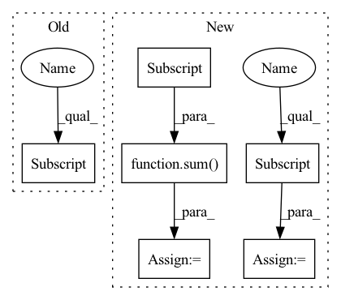

Pattern ID :418

Before Change
if idx == 0:
num_features.append(in_channels)
else:
num_features.append(growth_rate[idx-1])
net.append(MultiDilatedConvBlock(num_features, growth_rate[idx], kernel_size=kernel_size, norm=norm, nonlinear=nonlinear, eps=eps))
self.net = nn.Sequential(*net)
After Change
_in_channels = in_channels
for idx in range(depth):
_out_channels = sum(growth_rate[idx:])
dilation = 2**idx
conv_block = ConvBlock2d(_in_channels, _out_channels, kernel_size=kernel_size, stride=1, dilation=dilation, eps=eps)
net.append(conv_block)
_in_channels = growth_rate[idx]
self.net = nn.ModuleList(net)
def forward(self, input):
In pattern: SUPERPATTERN
Frequency: 3
Non-data size: 6
Instances
Fragment ID: 850733
Project Name: tky823/dnn-based_source_separation
Commit Name: 8fb5cd5f4f8b4a435d058aef6204904f657abea0
Time: 2021-06-06
Author: 40362510+tky823@users.noreply.github.com
File Name: src/models/d2net.py
Class Name: D2Block
Method Name: __init__
Parent Class: nn.Module
Fragment ID: 850734
Project Name: tky823/dnn-based_source_separation
Commit Name: 8fb5cd5f4f8b4a435d058aef6204904f657abea0
Time: 2021-06-06
Author: 40362510+tky823@users.noreply.github.com
File Name: src/models/d2net.py
Class Name: D2Block
Method Name: __init__
Parent Class: nn.Module
Fragment ID: 850729
Project Name: tky823/dnn-based_source_separation
Commit Name: 3bac874df403a2b5648fd98049865790c104ed55
Time: 2021-10-16
Author: 40362510+tky823@users.noreply.github.com
File Name: src/models/d2net.py
Class Name: D2Block
Method Name: __init__
Parent Class: nn.Module
Fragment ID: 850731
Project Name: tky823/dnn-based_source_separation
Commit Name: 3bac874df403a2b5648fd98049865790c104ed55
Time: 2021-10-16
Author: 40362510+tky823@users.noreply.github.com
File Name: src/models/d2net.py
Class Name: D2BlockFixedDilation
Method Name: __init__
Parent Class: nn.Module